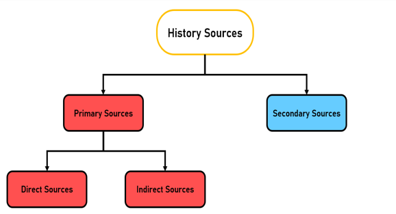

History Sources
The sources of history are all the materials where the information is gained from. They are divided into two categories, primary sources, and secondary sources. The primary sources are also divided into direct and indirect sources.
Fig. 3: Division of the history sources
Fig. 4: Writing machine.
Fig. 4 image by iniesta44. License:
https://bit.ly/3CCfHWi.
Changes to the size of the image were made.
Primary Sources:
The primary sources are all the materials that were created or made in the time when the event happened. They are divided in direct and indirect.
Direct Sources:
Testimonies of the event that come from people or objects. A letter to an important character, a weapon used in the event, or the history told by someone who participated in it are all direct sources.
Indirect Sources:
They are antique objects that were made during the time of the event. For example, old radios, TVs, and writing machines. You can gain a lot of information from these objects to know how people lived in this epoque.
Secondary Sources:
Facts or comments about the event told by people who didn’t participate in it. History books, articles about an event, or tales of people about their ancestors are examples of these.